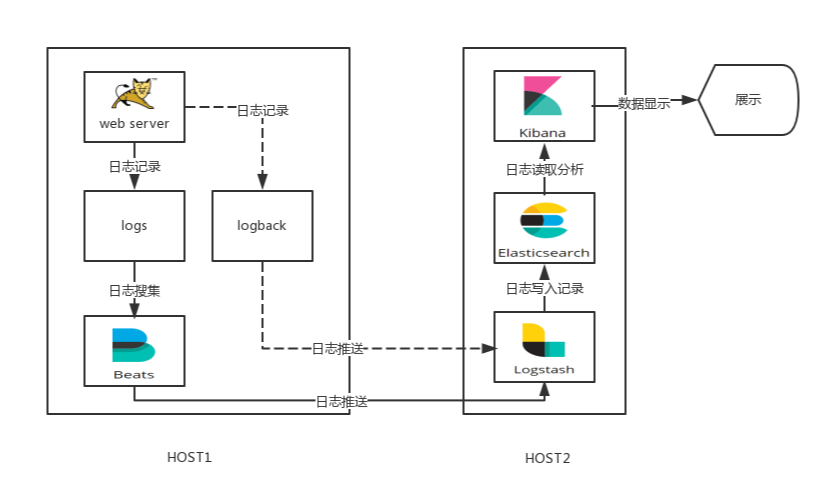
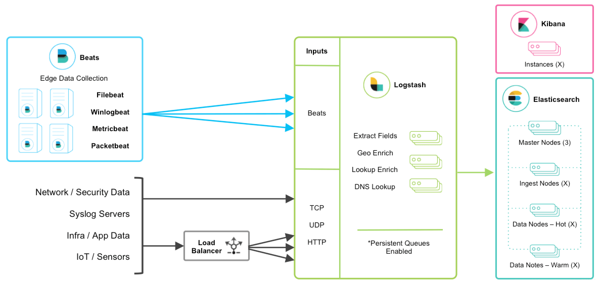
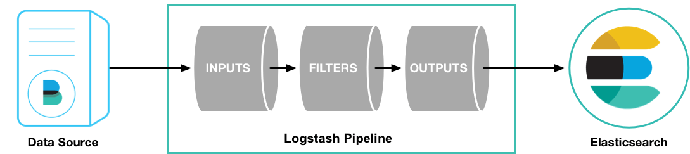
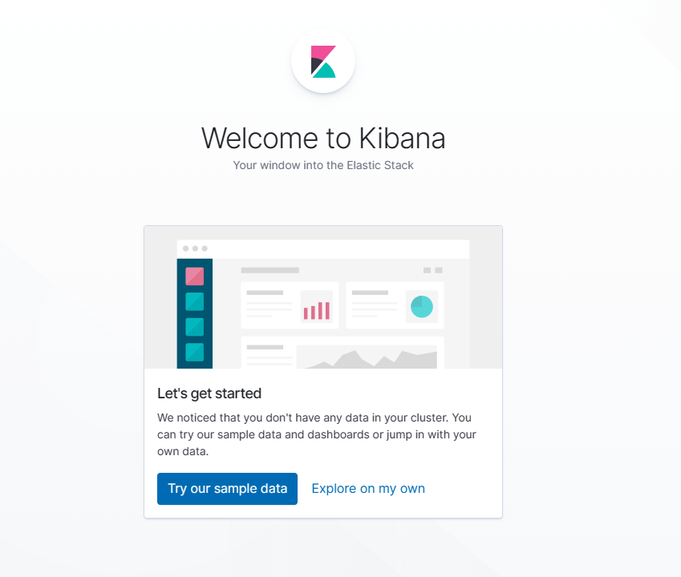
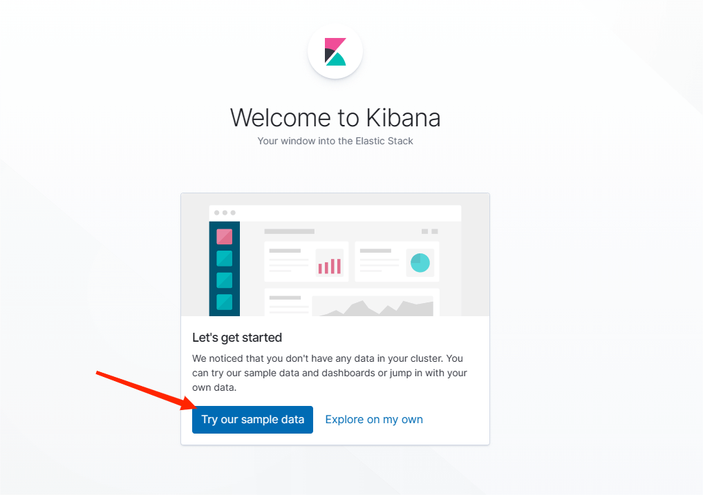
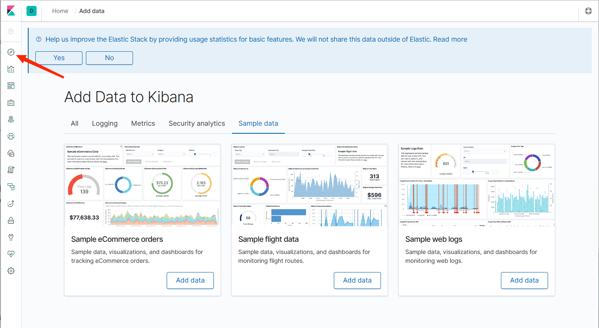
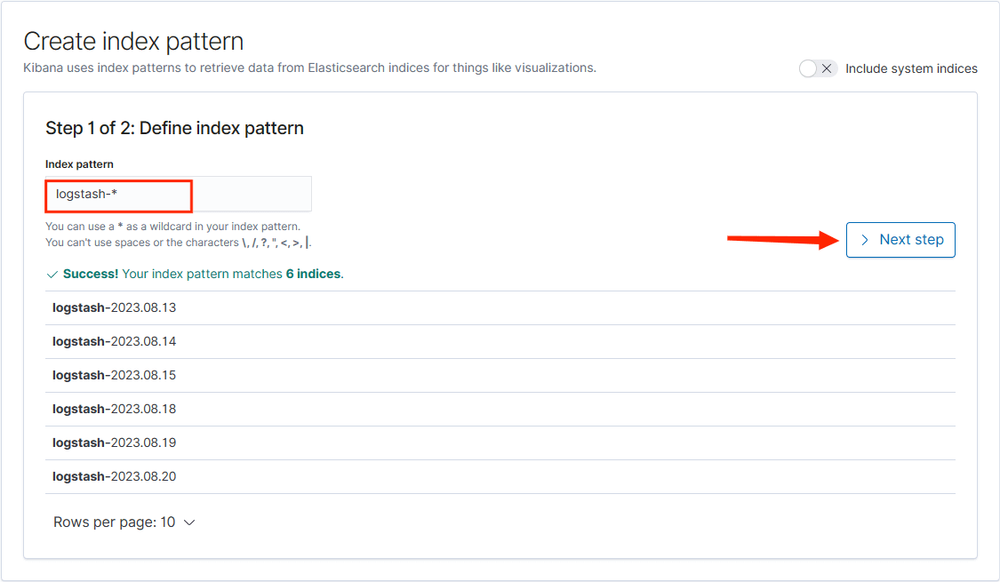
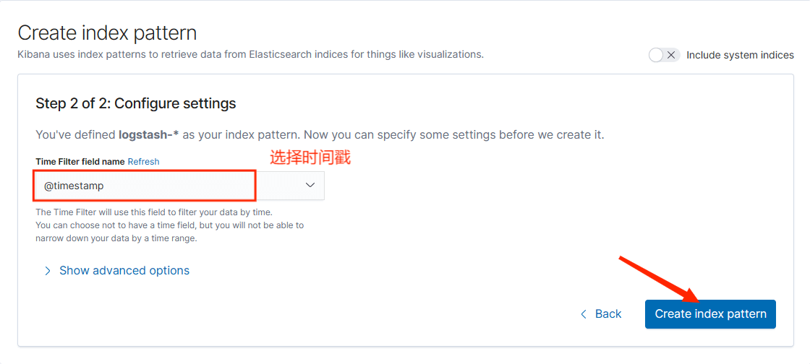
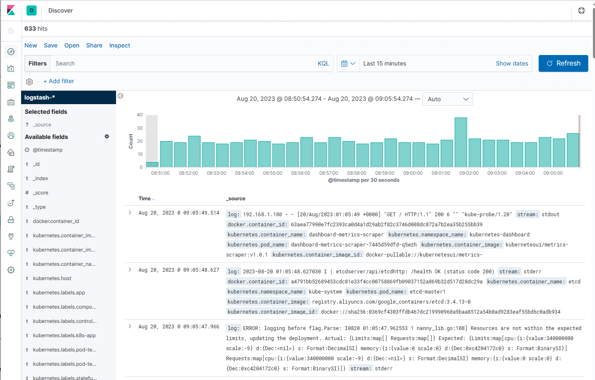
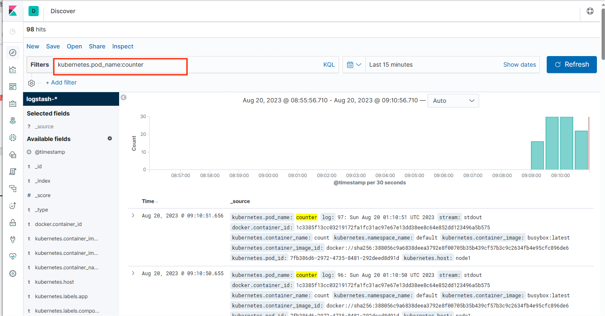

基于EFK构建日志收集平台 日志的重要性
在生产环境或者测试环境，如果某个服务或者业务组件出现问题，如何定位和排查？需要靠日志，日志是定位问题的重要手段，就像办案人员要根据现场留下的线索推断案情一样。
DEBUG
DEBUG 可以打印出最详细的日志信息，主要用于开发过程中打印一些运行信息。
INFO
INFO 可以打印一些你感兴趣的或者重要的信息，这个可以用于生产环境中输出程序运行的一些重要信息，但是不能滥用，避免打印过多的日志。
WARNING
WARNING 表明发生了一些暂时不影响运行的错误，会出现潜在错误的情形，有些信息不是错误信息，但是也要给程序员的一些提示
ERROR
ERROR 可以打印错误和异常信息，如果不想输出太多的日志，可以使用这个级别，这一级就是比较重要的错误了，软件的某些功能已经不能继续执行了。
那么应该打印什么级别的日志呢?首先我们应该明确谁在看日志。
通常来说，系统出了问题客户不会进到系统对着控制台查看日志输出，所以日志所面对的主体对象必然是软件开发人员(包括测试测试、维护人员)。
下面我们假设几种场景来帮助我们理解日志级别：
程序开发结束后交由给测试人员进行测试，测试人员根据测试用例发现某个用例的输出和预期不符，此时他的一反应该是查看日志。此时的日志是 INFO 级别日志不会出现 DEBUG 级别的日志，现在就需要根据日志打印分为两种情况决定他下一步操作：
通过查看 INFO 日志发现是由于自己操作失误，造成了程序结果和预期不符合，这种情况不是程序出错，所以并不是 bug，不需要开发人员到场。
通过查看 INFO 日志发现自己的操作正确，根据 INFO 日志查看并不是操作失误造成，这个时候就需要开发人员到场确认。
以上两种情况是理想情况，测试人员仅根据 INFO 级别的日志就能判断出程序的输出结果与预期不符是因为自己操作失误还是程序 bug。更为现实的情况实际是测试人员并不能根据 INFO 级别的日志判断是否是自己失误还是程序 bug。
综上，INFO 级别的日志应该是能帮助测试人员判断这是否是一个真正的 bug，而不是自己操作失误造成的。假设测试人员现在已经初步判断这是一个 bug，并且这个 bug 不那么明显，此时就需要开发人员到场确认。开发人员到达现场后，第一步应该是查看 INFO 日志初步作判断验证测试人员的看法，接着如果不能判断出问题所在则应该是将日志级别调整至 DEBUG 级别，打印出 DEBUG 级别的日志，通过 DEBUG 日志来分析定位 bug 出在哪里。所以，DEBUG 级别的日志应该是能帮助开发人员分析定位 bug 所在的位置。
ERROR 和 WARN 的级别都比 INFO 要高，所以在设定日志级别在 INFO 时，这两者的日志也会被打印。根据上面 INFO 和 DEBUG 级别的区别以及适用人员可以知道，ERROR 和 WARN 是同时给测试和开发、运维观察的。WARN 级别称之为“警告”，这个“警告”实际上就有点含糊了，它不算错，你可以选择忽视它，但也可以选择重视它。例如，现在一个 WARN 日志打出这么一条日志“系统有崩溃的风险”，这个时候就需要引起足够的重视，它代表现在不会崩溃，但是它有崩溃的风险。或者出现“某用户在短时间内将密码输出很多次过后才进入了系统”，这个时候是不是系统被暴力破解了呢?等等，这个级别日志如同它的字面含义，给你一个警告，你可以选择忽视，也可以重视，但至少它现在不会给系统带来其他影响。
ERROR 级别称之为“错误”，这个含义就更明显了，就是系统出现了错误，需要处理。为常见的就是捕获异常时所打印的日志。
常见的日志收集方案
常见的进行日志分析的方法：直接在日志文件中 grep、awk 就可以获得自己想要的信息。但在规模较大的场景中，此方法效率低下，面临问题包括日志量太大如何归档、文本搜索太慢怎么办、如何多维度查询。需要集中化的日志管理，把所有服务器上的日志收集汇总。常见解决思路是建立集中式日志收集系统，将所有节点上的日志统一收集，管理，访问。
大型系统是一个分布式部署的架构，不同的服务模块部署在不同的服务器上，问题出现时，大部分情况需要根据问题暴露的关键信息，定位到具体的服务器和服务模块，构建一套集中式日志系统，可以提高定位问题的效率。
对大量的日志业务数据进行分析，如平台 PV、UV、IP、PageTOP 等维度进行分析查询等。另外安全审计、数据挖掘、行为分析等都少不了日志对其作为支撑。
EFK
在 Kubernetes 集群上运行多个服务和应用程序时，日志收集系统可以帮助你快速分类和分析由Pod 生成的大量日志数据。Kubernetes 中比较流行的日志收集解决方案是 Elasticsearch、Fluentd 和 Kibana（EFK）技术栈，也是官方推荐的一种方案。
Elasticsearch 是一个实时的，分布式的，可扩展的搜索引擎，它允许进行全文本和结构化搜索以及对日志进行分析。它通常用于索引和搜索大量日志数据，也可以用于搜索许多不同种类的文档。
Elasticsearch 通常与 Kibana 一起部署，kibana 可以把 Elasticsearch 采集到的数据通过dashboard（仪表板）可视化展示出来。Kibana 允许你通过 Web 界面浏览 Elasticsearch 日志数据，也可自定义查询条件快速检索出 elasticccsearch 中的日志数据。
Fluentd 是一个流行的开源数据收集器，我们在 Kubernetes 集群节点上安装 Fluentd，通过获取容器日志文件、过滤和转换日志数据，然后将数据传递到 Elasticsearch 集群，在该集群中对其进行索引和存储。
ELK Stack
E - Elasticsearch（简称：ES）
L - Logstash
K - Kibana
Elasticsearch：日志存储和搜索引擎，它的特点有：分布式，零配置，自动发现，索引自动分片，索引副本机制，restful 风格接口，多数据源，自动搜索负载等。
Logstash：是一个完全开源的工具，他可以对你的日志进行收集、过滤，并将其存储供以后使用（支持动态的从各种数据源搜集数据，并对数据进行过滤、分析、丰富、统一格式等操作。）。
Kibana 也是一个开源和免费的工具，Kibana 可以为 Logstash 和 ElasticSearch 提供的日志分析友好的 Web 界面，可以帮助您汇总、分析和搜索重要数据日志。

应用程序（AppServer）–>Logstash–>ElasticSearch–>Kibana–>浏览器（Browser）：
Logstash 收集 AppServer 产生的 Log，并存放到 ElasticSearch 集群中，而 Kibana 则从 ElasticSearch集群中查询数据生成图表，再返回给 Browser。
考虑到聚合端（日志处理、清洗等）负载问题和采集端传输效率，一般在日志量比较大的时候在采集端和聚合端增加队列，以用来实现日志消峰。
ELK+filebeat 
Filebeat（采集）—> Logstash（聚合、处理）—> ElasticSearch （存储）—>Kibana （展示）
其他方案
ELK 日志流程可以有多种方案（不同组件可自由组合，根据自身业务配置），常见有以下：
Logstash（采集、处理）—> ElasticSearch （存储）—>Kibana （展示）
Logstash（采集）—> Logstash（聚合、处理）—> ElasticSearch （存储）—>Kibana （展示）
Filebeat（采集、处理）—> ElasticSearch （存储）—>Kibana （展示）
Filebeat（采集）—> Logstash（聚合、处理）—> ElasticSearch （存储）—>Kibana （展示）
Filebeat（采集）—> Kafka/Redis(消峰) —> Logstash（聚合、处理）—> ElasticSearch （存储）—>Kibana （展示）
elasticsearch 组件介绍 Elasticsearch 是一个分布式的免费开源搜索和分析引擎，适用于包括文本、数字、地理空间、结构化和非结构化数据等在内的所有类型的数据。Elasticsearch 在 Apache Lucene 的基础上开发而成，由 Elasticsearch N.V.（即现在的 Elastic）于 2010 年首次发布。Elasticsearch 以其简单的 REST 风格 API、分布式特性、速度和可扩展性而闻名，是 Elastic Stack 的核心组件；Elastic Stack 是一套适用于数据采集、扩充、存储、分析和可视化的免费开源工具。人们通常将 Elastic Stack 称为 ELK Stack（代指 Elasticsearch、Logstash 和 Kibana），目前 Elastic Stack 包括一系列丰富的轻量型数据采集代理，这些代理统称为 Beats，可用来向 Elasticsearch 发送数据。
filebeat 组件介绍 filebeat 和 beat 关系
filebeat 是 Beats 中的一员。
Beats 是一个轻量级日志采集器，Beats 家族有 6 个成员，早期的 ELK 架构中使用 Logstash 收集、解析日志，但是 Logstash 对内存、cpu、io 等资源消耗比较高。相比 Logstash，Beats 所占系统的 CPU 和内存几乎可以忽略不计。
目前 Beats 包含六种工具
Packetbeat：网络数据（收集网络流量数据）
Metricbeat：指标（收集系统、进程和文件系统级别的 CPU 和内存使用情况等数据）
Filebeat：日志文件（收集文件数据）
Winlogbeat：windows 事件日志（收集 Windows 事件日志数据）
Auditbeat：审计数据（收集审计日志）
Heartbeat：运行时间监控（收集系统运行时的数据）
filebeat 是什么
Filebeat 是用于转发和收集日志数据的轻量级传送工具。Filebeat 监视你指定的日志文件或位置，收集日志事件，并将它们转发到 Elasticsearch 或 Logstash 中。
Filebeat 的工作方式如下：启动 Filebeat 时，它将启动一个或多个输入，这些输入将在为日志数据指定的位置中查找。对于 Filebeat 所找到的每个日志，Filebeat 都会启动收集器。每个收集器都读取单个日志以获取新内容，并将新日志数据发送到 libbeat，libbeat 将聚集事件，并将聚集的数据发送到为 Filebeat 配置的输出。
工作的流程图
Filebeat 有两个主要组件：
harvester：一个 harvester 负责读取一个单个文件的内容。harvester 逐行读取每个文件，并把这些内容发送到输出。每个文件启动一个 harvester。
Input：一个 input 负责管理 harvesters，并找到所有要读取的源。如果 input 类型是 log，则 input 查找驱动器上与已定义的 log 日志路径匹配的所有文件，并为每个文件启动一个 harvester。
Filebeat 工作原理
在任何环境下，应用程序都有停机的可能性。 Filebeat 读取并转发日志行，如果中断，则会记住所有事件恢复联机状态时所在位置。
Filebeat 带有内部模块（auditd，Apache，Nginx，System 和 MySQL），可通过一个指定命令来简化通用日志格式的收集，解析和可视化。
FileBeat 不会让你的管道超负荷。FileBeat 如果是向 Logstash 传输数据，当 Logstash 忙于处理数据，会通知 FileBeat 放慢读取速度。一旦拥塞得到解决，FileBeat 将恢复到原来的速度并继续传播。
Filebeat 保持每个文件的状态，并经常刷新注册表文件中的磁盘状态。状态用于记住 harvester 正在读取的最后偏移量，并确保发送所有日志行。Filebeat 将每个事件的传递状态存储在注册表文件中。所以它能保证事件至少传递一次到配置的输出，没有数据丢失。
传输方案
output.elasticsearch
如果你希望使用 filebeat 直接向 elasticsearch 输出数据，需要配置 output.elasticsearch
1 2 output.elasticsearch: hosts: ["192.168.1.180:9200" ]
output.logstash
如果使用 filebeat 向 logstash 输出数据，然后由 logstash 再向 elasticsearch 输出数据，需要配置 output.logstash。 logstash 和 filebeat 一起工作时，如果 logstash 忙于处理数据，会通知 FileBeat 放慢读取速度。一旦拥塞得到解决，FileBeat 将恢复到原来的速度并继续传播。这样，可以减少管道超负荷的情况。
1 2 output.logstash: hosts: ["192.168.1.180:5044" ]
output.kafka
如果使用 filebeat 向 kafka 输出数据，然后由 logstash 作为消费者拉取 kafka 中的日志，并再向 elasticsearch 输出数据，需要配置 output.logstash
1 2 3 4 output.kafka: enabled: true hosts: ["192.168.1.180:9092" ] topic: elfk8stest
logstash 组件介绍
Logstash 是一个开源数据收集引擎，具有实时管道功能。Logstash 可以动态地将来自不同数据源的数据统一起来，并将数据标准化到你所选择的目的地。Logstash 是一个应用程序日志、事件的传输、处理、管理和搜索的平台。你可以用它来统一对应用程序日志进行收集管理，提供 Web 接口用于查询和统计。
输入：采集各种样式、大小和来源的数据
数据往往以各种各样的形式，或分散或集中地存在于很多系统中。Logstash 支持各种输入选择，可以在同一时间从众多常用来源捕捉事件。能够以连续的流式传输方式，轻松地从你的日志、指标、Web 应用、数据存储以及各种 AWS 服务采集数据。
过滤器：实时解析和转换数据
数据从源传输到存储库的过程中，Logstash 过滤器能够解析各个事件，识别已命名的字段以构建结构，并将它们转换成通用格式，以便更轻松、更快速地分析和实现商业价值。
Logstash 能够动态地转换和解析数据，不受格式或复杂度的影响：
利用 Grok 从非结构化数据中派生出结构
从 IP 地址破译出地理坐标
将 PII 数据匿名化，完全排除敏感字段
整体处理不受数据源、格式或架构的影响
输出：选择你的存储，导出你的数据
尽管 Elasticsearch 是我们的首选输出方向，能够为我们的搜索和分析带来无限可能，但它并非唯一选择。Logstash 提供众多输出选择，你可以将数据发送到你要指定的地方。
Logstash 工作原理 
Logstash 有两个必要元素：input 和 output ，一个可选元素：filter。 这三个元素，分别代表 Logstash 事件处理的三个阶段：输入 > 过滤器 > 输出
Input 负责从数据源采集数据。
filter 将数据修改为你指定的格式或内容。
output 将数据传输到目的地。
在实际应用场景中，通常输入、输出、过滤器不止一个。Logstash 的这三个元素都使用插件式管理方式，可以根据应用需要，灵活的选用各阶段需要的插件，并组合使用。
常用 input 模块
Logstash 支持各种输入选择 ，可以在同一时间从众多常用来源捕捉事件。能够以连续的流式传输方式，可从日志、指标、Web 应用、数据存储以及各种 AWS 服务采集数据。
file：从文件系统上的文件读取
syslog：在众所周知的端口 514 上侦听系统日志消息，并根据 RFC3164 格式进行解析
redis：从 redis 服务器读取，使用 redis 通道和 redis 列表。 Redis 经常用作集中式 Logstash 安装中的“代理”，它将接收来自远程 Logstash“托运人”的 Logstash 事件排队。
beats：处理由 Filebeat 发送的事件。
常用的 filter 模块
过滤器是 Logstash 管道中的中间处理设备。可以将条件过滤器组合在一起，对事件执行操作。
grok：解析和结构任意文本。 Grok 目前是 Logstash 中将非结构化日志数据解析为结构化和可查询的最佳方法。
mutate：对事件字段执行一般转换。可以重命名，删除，替换和修改事件中的字段。
drop：完全放弃一个事件，例如调试事件。
clone：制作一个事件的副本，可能会添加或删除字段。
geoip：添加有关 IP 地址的地理位置的信息
常用 output
elasticsearch：将事件数据发送给 Elasticsearch（推荐模式）。
file：将事件数据写入文件或磁盘。
graphite：将事件数据发送给 graphite（一个流行的开源工具，存储和绘制指标，http://graphite.readthedocs.io/en/latest/）。
statsd：将事件数据发送到 statsd （这是一种侦听统计数据的服务，如计数器和定时器，通过UDP 发送并将聚合发送到一个或多个可插入的后端服务）。
常用 code 插件
json：以 JSON 格式对数据进行编码或解码。
multiline：将多行文本事件（如 java 异常和堆栈跟踪消息）合并为单个事件。
1 2 3 4 5 6 7 8 9 10 11 12 13 14 15 16 input { kafka { bootstrap_servers => "192.168.1.180:9092" auto_offset_reset => "latest" consumer_threads => 5 decorate_events => true topics => [ "elktest" ] } } output { elasticsearch { hosts => [ "192.168.1.180:9200" ] index => "elkk8stest-%{+YYYY.MM.dd}" } }
fluentd 组件介绍
fluentd 比 logstash 更省资源；
更轻量级的 fluent-bid 对应 filebeat，作为部署在结点上的日志收集器；
fluentd 有更多强大、开放的插件数量和社区。插件多，也非常灵活，规则也不复杂。
fluentd、filebeat、logstash 对比分析
常见的日志采集工具有 Logstash、Filebeat、Fluentd、Logagent、rsyslog 等等，那么他们之间有什么区别呢?什么情况下我们应该用哪一种工具?
Logstash
Logstash 是一个开源数据收集引擎，具有实时管道功能。Logstash 可以动态地将来自不同数据源的数据统一起来，并将数据标准化到你所选择的目的地。
优点
Logstash 主要的优点就是它的灵活性，主要因为它有很多插件，详细的文档以及直白的配置格式让它可以在多种场景下应用。我们基本上可以在网上找到很多资源，几乎可以处理任何问题。
劣势
Logstash 致命的问题是它的性能以及资源消耗(默认的堆大小是 1GB)。尽管它的性能在近几年已经有很大提升，与它的替代者们相比还是要慢很多的。这里有 Logstash 与 rsyslog 性能对比以及Logstash 与 filebeat 的性能对比。它在大数据量的情况下会是个问题。
另一个问题是它目前不支持缓存，目前的典型替代方案是将 Redis 或 Kafka 作为中心缓冲池
典型应用场景
因为 Logstash 自身的灵活性以及网络上丰富的资料，Logstash 适用于原型验证阶段使用，或者解析非常的复杂的时候。在不考虑服务器资源的情况下，如果服务器的性能足够好，我们也可以为每台服务器安装 Logstash 。我们也不需要使用缓冲，因为文件自身就有缓冲的行为，而 Logstash 也会记住上次处理的位置。
如果服务器性能较差，并不推荐为每个服务器安装 Logstash ，这样就需要一个轻量的日志传输工具，将数据从服务器端经由一个或多个 Logstash 中心服务器传输到Elasticsearch
随着日志项目的推进，可能会因为性能或代价的问题，需要调整日志传输的方式(log shipper)。当判断 Logstash 的性能是否足够好时，重要的是对吞吐量的需求有着准确的估计，这也决定了需要为Logstash 投入多少硬件资源。
Filebeat
作为 Beats 家族的一员，Filebeat 是一个轻量级的日志传输工具，它的存在正弥补了 Logstash 的缺点：Filebeat 作为一个轻量级的日志传输工具可以将日志推送到中心 Logstash。
在版本 5.x 中，Elasticsearch 具有解析的能力(像 Logstash 过滤器)— Ingest。这也就意味着可以将数据直接用 Filebeat 推送到 Elasticsearch，并让 Elasticsearch 既做解析的事情，又做存储的事情。也不需要使用缓冲，因为 Filebeat 也会和 Logstash 一样记住上次读取的偏移，如果需要缓冲(例如，不希望将日志服务器的文件系统填满)，可以使用 Redis/Kafka，因为 Filebeat 可以与它们进行通信。
优势
Filebeat 只是一个二进制文件没有任何依赖。它占用资源极少，尽管它还十分年轻，正式因为它简单，所以几乎没有什么可以出错的地方，所以它的可靠性还是很高的。它也为我们提供了很多可以调节的点，例如：它以何种方式搜索新的文件，以及当文件有一段时间没有发生变化时，何时选择关闭文件句柄
劣势
Filebeat 的应用范围十分有限，所以在某些场景下我们会碰到问题。例如，如果使用 Logstash 作为下游管道，我们同样会遇到性能问题。正因为如此，Filebeat 的范围在扩大。开始时，它只能将日志发送到 Logstash 和 Elasticsearch，而现在它可以将日志发送给 Kafka 和 Redis，在 5.x 版本中，它还具备过滤的能力。
Fluentd
Fluentd 创建的初衷主要是尽可能的使用 JSON 作为日志输出，所以传输工具及其下游的传输线不需要猜测子字符串里面各个字段的类型。这样，它为几乎所有的语言都提供库，这也意味着，我们可以将它插入到我们自定义的程序中。
优势
和多数 Logstash 插件一样，Fluentd 插件是用 Ruby 语言开发的非常易于编写维护。所以它数量很多，几乎所有的源和目标存储都有插件(各个插件的成熟度也不太一样)。这也意味这我们可以用 Fluentd 来串联所有的东西。
劣势
因为在多数应用场景下，我们会通过 Fluentd 得到结构化的数据，它的灵活性并不好。但是我们仍然可以通过正则表达式，来解析非结构化的数据。尽管，性能在大多数场景下都很好，但它并不是最好的，和 syslog-ng 一样，它的缓冲只存在与输出端，单线程核心以及 Ruby GIL 实现的插件意味着它大的节点下性能是受限的，不过，它的资源消耗在大多数场景下是可以接受的。对于小的或者嵌入式的设备，可能需要看看 Fluent Bit，它和 Fluentd 的关系与 Filebeat 和 Logstash 之间的关系类似。
典型应用场景
Fluentd 在日志的数据源和目标存储各种各样时非常合适，因为它有很多插件。而且，如果大多数数据源都是自定义的应用，所以可以发现用 fluentd 的库要比将日志库与其他传输工具结合起来要容易很多。特别是在我们的应用是多种语言编写的时候，即我们使用了多种日志库，日志的行为也不太一样。
Logagent
Logagent 是 Sematext 提供的传输工具，它用来将日志传输到 Logsene(一个基于 SaaS 平台的 Elasticsearch API)，因为 Logsene 会暴露 Elasticsearch API，所以 Logagent 可以很容易将数据推送到 Elasticsearch 。
优势
可以获取 /var/log 下的所有信息，解析各种格式(Elasticsearch，Solr，MongoDB，Apache HTTPD 等等)，它可以掩盖敏感的数据信息，例如，个人验证信息(PII)，出生年月日，信用卡号码，等等。它还可以基于 IP 做 GeoIP 丰富地理位置信息(例如，access logs)。同样，它轻量又快速，可以将其置入任何日志块中。在新的 2.0 版本中，它以第三方 node.js 模块化方式增加了支持对输入输出的处理插件。重要的是 Logagent 有本地缓冲，所以不像 Logstash ，在数据传输目的地不可用时会丢失日志。
劣势
尽管 Logagent 有些比较有意思的功能(例如，接收 Heroku 或 CloudFoundry 日志)，但是它并没有 Logstash 灵活。
典型应用场景
Logagent 作为一个可以做所有事情的传输工具是值得选择的(提取、解析、缓冲和传输)。
logtail
阿里云日志服务的生产者，目前在阿里集团内部机器上运行，经过 3 年多时间的考验，目前为阿里公有云用户提供日志收集服务。采用 C++语言实现，对稳定性、资源控制、管理等下过很大的功夫，性能良好。相比于 logstash、fluentd 的社区支持，logtail 功能较为单一，专注日志收集功能。
优势
logtail 占用机器 cpu、内存资源最少，结合阿里云日志服务的 E2E 体验良好。
劣势
logtail 目前对特定日志类型解析的支持较弱，后续需要把这一块补起来。
rsyslog
绝大多数 Linux 发布版本默认的 syslog 守护进程，rsyslog 可以做的不仅仅是将日志从 syslog socket 读取并写入 /var/log/messages 。它可以提取文件、解析、缓冲(磁盘和内存)以及将它们传输到多个目的地，包括 Elasticsearch 。可以从此处找到如何处理 Apache 以及系统日志。
优势
rsyslog 是经测试过的最快的传输工具。如果只是将它作为一个简单的 router/shipper 使用，几乎所有的机器都会受带宽的限制，但是它非常擅长处理解析多个规则。它基于语法的模块(mmnormalize)无论规则数目如何增加，它的处理速度始终是线性增长的。这也就意味着，如果当规则在 20-30 条时，如解析 Cisco 日志时，它的性能可以大大超过基于正则式解析的 grok ，达到 100 倍(当然，这也取决于 grok 的实现以及 liblognorm 的版本)。
它同时也是我们能找到的最轻的解析器，当然这也取决于我们配置的缓冲。
劣势
rsyslog 的配置工作需要更大的代价(这里有一些例子)，这让两件事情非常困难：
文档难以搜索和阅读，特别是那些对术语比较陌生的开发者。
5.x 以上的版本格式不太一样(它扩展了 syslogd 的配置格式，同时也仍然支持旧的格式)，尽管新的格式可以兼容旧格式，但是新的特性(例如，Elasticsearch 的输出)只在新的配置下才有效，然后旧的插件(例如，Postgres 输出)只在旧格式下支持。
尽管在配置稳定的情况下，rsyslog 是可靠的(它自身也提供多种配置方式，最终都可以获得相同的结果)，它还是存在一些 bug 。
典型应用场景
rsyslog 适合那些非常轻的应用(应用，小 VM，Docker 容器)。如果需要在另一个传输工具(例如，Logstash)中进行处理，可以直接通过 TCP 转发 JSON ，或者连接 Kafka/Redis 缓冲。
rsyslog 还适合我们对性能有着非常严格的要求时，特别是在有多个解析规则时。那么这就值得为之投入更多的时间研究它的配置。
重点：Logstash、fluentd、filebeat
安装 elasticsearch 组件 创建名称空间 在安装 Elasticsearch 集群之前，我们先创建一个名称空间，在这个名称空间下安装日志收工具elasticsearch、fluentd、kibana。我们创建一个 kube-logging 名称空间，将 EFK 组件安装到该名称空间中。
1 2 3 4 5 [root@master1 elk ] kind: Namespace apiVersion: v1 metadata: name: kube-logging
查看 kube-logging 名称空间是否创建成功
1 2 [root@master1 elk]# kubectl get namespaces | grep kube-logging kube-logging Active 16s
安装 elasticsearch 组件 通过上面步骤已经创建了一个名称空间 kube-logging，在这个名称空间下去安装日志收集组件 efk，首先，我们需要部署一个有 3 个节点的 Elasticsearch 集群。我们使用 3 个 Elasticsearch Pods 可以避免高可用中的多节点群集中发生的“裂脑”的问题。 Elasticsearch 脑裂可参考如下：https://www.elastic.co/guide/en/elasticsearch/reference/current/modules-node.html#split-brain
创建 headless service 服务 创建一个 headless service 的 Kubernetes 服务，服务名称是 elasticsearch，这个服务将为 3 个 Pod 定义一个 DNS 域。headless service 不具备负载均衡也没有 IP。要了解有关 headless service 的更多信息，可参考https://kubernetes.io/docs/concepts/services-networking/service/#headless-services
1 2 3 4 5 6 7 8 9 10 11 12 13 14 15 16 17 [root@master1 elk ] kind: Service apiVersion: v1 metadata: name: elasticsearch namespace: kube-logging labels: app: elasticsearch spec: selector: app: elasticsearch clusterIP: None ports: - port: 9200 name: rest - port: 9300 name: inter-node
在 kube-logging 名称空间定义了一个名为 elasticsearch 的 Service 服务，带有 app=elasticsearch 标签，当我们将 Elasticsearch StatefulSet 与此服务关联时，服务将返回带有标签 app=elasticsearch 的 Elasticsearch Pods 的 DNS A 记录，然后设置 clusterIP=None，将该服务设置成无头服务。最后，我们分别定义端口 9200、9300，分别用于与 REST API 交互，以及用于节点间通信。
查看 elasticsearch 的 service 是否创建成功
1 2 3 [root@master1 elk]# kubectl get services --namespace=kube-logging NAME TYPE CLUSTER-IP EXTERNAL-IP PORT(S) AGE elasticsearch ClusterIP None <none> 9200/TCP,9300/TCP 2s
现在我们已经为 Pod 设置了无头服务和一个稳定的域名.elasticsearch.kube-logging.svc.cluster.local，接下来我们通过 StatefulSet 来创建具体的 Elasticsearch 的 Pod 应用。
通过 statefulset 创建 elasticsearch 集群 创建 Storageclass，实现存储类动态供给 1 2 3 4 5 6 7 8 9 10 11 12 13 14 15 16 17 18 19 20 21 # 安装 nfs [root@master1 ~]# yum install nfs-utils -y [root@node1 ~]# yum install nfs-utils -y # 启动 nfs 服务 [root@master1 ~]# systemctl enable --now nfs [root@node1 ~]# systemctl enable --now nfs # 创建 nfs 共享目录 [root@master1 ~]# mkdir /data/v1 -p [root@master1 ~]# vim /etc/exports /data/v1 192.168.1.0/24(rw,no_root_squash) # 加载配置 [root@master1 ~]# exportfs -rav exporting 192.168.1.0/24:/data/v1 [root@master1 ~]# systemctl restart nfs
创建 nfs 作为存储的供应商
1 2 3 4 5 6 7 8 9 10 11 12 13 14 15 16 17 18 19 20 21 22 23 24 25 26 27 28 29 30 31 32 33 34 35 36 37 38 39 40 41 42 43 44 45 46 47 48 49 50 51 52 53 54 55 56 57 58 59 60 61 62 63 64 65 66 67 68 69 70 71 72 73 74 75 76 77 78 79 80 81 82 83 84 85 86 87 88 89 90 91 92 93 94 95 96 97 98 99 100 101 102 103 104 105 106 107 108 109 110 111 112 113 114 115 116 117 118 119 120 121 122 123 124 125 126 127 128 129 130 131 132 133 134 135 136 137 138 139 140 141 142 [root@master1 ~ ] apiVersion: v1 kind: ServiceAccount metadata: name: nfs-provisioner [root@master1 elk ] kind: ClusterRole apiVersion: rbac.authorization.k8s.io/v1 metadata: name: nfs-provisioner-runner rules: - apiGroups: ["" ] resources: ["persistentvolumes" ] verbs: ["get" , "list" , "watch" , "create" , "delete" ] - apiGroups: ["" ] resources: ["persistentvolumeclaims" ] verbs: ["get" , "list" , "watch" , "update" ] - apiGroups: ["storage.k8s.io" ] resources: ["storageclasses" ] verbs: ["get" , "list" , "watch" ] - apiGroups: ["" ] resources: ["events" ] verbs: ["create" , "update" , "patch" ] - apiGroups: ["" ] resources: ["services" , "endpoints" ] verbs: ["get" ] - apiGroups: ["extensions" ] resources: ["podsecuritypolicies" ] resourceNames: ["nfs-provisioner" ] verbs: ["use" ] --- kind: ClusterRoleBinding apiVersion: rbac.authorization.k8s.io/v1 metadata: name: run-nfs-provisioner subjects: - kind: ServiceAccount name: nfs-provisioner namespace: default roleRef: kind: ClusterRole name: nfs-provisioner-runner apiGroup: rbac.authorization.k8s.io --- kind: Role apiVersion: rbac.authorization.k8s.io/v1 metadata: name: leader-locking-nfs-provisioner rules: - apiGroups: ["" ] resources: ["endpoints" ] verbs: ["get" , "list" , "watch" , "create" , "update" , "patch" ] --- kind: RoleBinding apiVersion: rbac.authorization.k8s.io/v1 metadata: name: leader-locking-nfs-provisioner subjects: - kind: ServiceAccount name: nfs-provisioner namespace: default roleRef: kind: Role name: leader-locking-nfs-provisioner apiGroup: rbac.authorization.k8s.io 注意：k8s1.20+版本通过 nfs provisioner 动态生成 pv 会报错 Unexpected error getting claim reference to claim "default/test-claim1": selfLink was empty, can't make reference 报错原因是 1.20 版本启用了 selfLink，解决方法如下 编辑/etc/kubernetes/manifests/kube-apiserver.yaml spec: containers: - command: - kube-apiserver 添加这一行： - --feature-gates=RemoveSelfLink=false [root@master1 elk ] [root@master1 elk ] kube-apiserver 0 /1 CrashLoopBackOff 1 6s kube-apiserver-master1 0 /1 Pending 0 7s 重新更新 apiserver.yaml 会有生成一个新的 pod：kube-apiserver，这个 pod 状态是 CrashLoopBackOff，需要删除 [root@master1 elk ] [root@master1 elk ] kind: Deployment apiVersion: apps/v1 metadata: name: nfs-provisioner spec: selector: matchLabels: app: nfs-provisioner replicas: 1 strategy: type: Recreate template: metadata: labels: app: nfs-provisioner spec: serviceAccount: nfs-provisioner containers: - name: nfs-provisioner image: registry.cn-hangzhou.aliyuncs.com/open-ali/xianchao/nfs-client-provisioner:v1 imagePullPolicy: IfNotPresent volumeMounts: - name: nfs-client-root mountPath: /persistentvolumes env: - name: PROVISIONER_NAME value: example.com/nfs - name: NFS_SERVER value: 192.168 .1 .180 - name: NFS_PATH value: /data/v1 volumes: - name: nfs-client-root nfs: server: 192.168 .1 .180 path: /data/v1 [root@master1 elk ] nfs-provisioner-69d9c786c4-9j2md 1 /1 Running 0 94s [root@master1 elk ] apiVersion: storage.k8s.io/v1 kind: StorageClass metadata: name: do-block-storage provisioner: example.com/nfs
安装 elasticsearch 集群 1 2 3 4 5 6 7 8 9 10 11 12 13 14 15 16 17 18 19 20 21 22 23 24 25 26 27 28 29 30 31 32 33 34 35 36 37 38 39 40 41 42 43 44 45 46 47 48 49 50 51 52 53 54 55 56 57 58 59 60 61 62 63 64 65 66 67 68 69 70 71 72 73 74 75 76 77 78 79 80 81 82 83 84 85 86 87 88 89 90 91 92 93 94 95 96 97 98 99 100 101 102 103 104 105 106 107 108 109 110 111 112 113 114 115 116 117 118 119 120 121 122 123 124 125 126 [root@master1 elk ] apiVersion: apps/v1 kind: StatefulSet metadata: name: es-cluster namespace: kube-logging spec: serviceName: elasticsearch replicas: 3 selector: matchLabels: app: elasticsearch template: metadata: labels: app: elasticsearch spec: containers: - name: elasticsearch image: docker.elastic.co/elasticsearch/elasticsearch:7.2.0 imagePullPolicy: IfNotPresent resources: limits: cpu: 1000m requests: cpu: 100m ports: - containerPort: 9200 name: rest protocol: TCP - containerPort: 9300 name: inter-node protocol: TCP volumeMounts: - name: data mountPath: /usr/share/elasticsearch/data env: - name: cluster.name value: k8s-logs - name: node.name valueFrom: fieldRef: fieldPath: metadata.name - name: discovery.seed_hosts value: "es-cluster-0.elasticsearch.kube-logging.svc.cluster.local,es-cluster-1.elasticsearch.kube-logging.svc.cluster.local,es-cluster-2.elasticsearch.kube-logging.svc.cluster.local" - name: cluster.initial_master_nodes value: "es-cluster-0,es-cluster-1,es-cluster-2" - name: ES_JAVA_OPTS value: "-Xms512m -Xmx512m" initContainers: - name: fix-permissions image: busybox imagePullPolicy: IfNotPresent command: ["sh" , "-c" , "chown -R 1000:1000 /usr/share/elasticsearch/data" ] securityContext: privileged: true volumeMounts: - name: data mountPath: /usr/share/elasticsearch/data - name: increase-vm-max-map image: busybox imagePullPolicy: IfNotPresent command: ["sysctl" , "-w" , "vm.max_map_count=262144" ] securityContext: privileged: true - name: increase-fd-ulimit image: busybox imagePullPolicy: IfNotPresent command: ["sh" , "-c" , "ulimit -n 65536" ] securityContext: privileged: true volumeClaimTemplates: - metadata: name: data labels: app: elasticsearch spec: accessModes: [ "ReadWriteOnce" ] storageClassName: do-block-storage resources: requests: storage: 10Gi
若是pod一直处于pending状态解决方法
查看是否创建成功
1 2 3 4 5 6 7 8 9 10 11 12 13 14 15 16 17 18 19 20 21 22 23 24 25 26 27 28 29 30 31 32 33 34 35 36 37 38 39 40 41 42 43 44 45 46 47 48 49 50 51 52 53 54 55 56 57 [root@master1 elk]# kubectl get pods -n kube-logging NAME READY STATUS RESTARTS AGE es-cluster-0 1/1 Running 0 22s es-cluster-1 1/1 Running 0 15s es-cluster-2 1/1 Running 0 8s [root@master1 elk]# kubectl get svc -n kube-logging NAME TYPE CLUSTER-IP EXTERNAL-IP PORT(S) AGE elasticsearch ClusterIP None <none> 9200/TCP,9300/TCP 39h # pod 部署完成之后，可以通过 REST API 检查 elasticsearch 集群是否部署成功，使用下面的命令将本地端口 9200 转发到 Elasticsearch 节点（如 es-cluster-0）对应的端口： [root@master1 elk]# kubectl port-forward es-cluster-0 9200:9200 --namespace=kube-logging # 然后，在另外的终端窗口中，执行如下请求，新开一个 master1 终端 [root@master1 elk]# curl http://localhost:9200/_cluster/state?pretty { "cluster_name" : "k8s-logs", "cluster_uuid" : "2G2VAWfSSOq0O5rvFvsfdQ", "version" : 17, "state_uuid" : "9I6LRXbfQ3Ck_eS39C9iKw", "master_node" : "eJFN8jMXQNS4zhRIHsPHjw", "blocks" : { }, "nodes" : { "eJFN8jMXQNS4zhRIHsPHjw" : { "name" : "es-cluster-1", "ephemeral_id" : "ByZA40QCTlyfjYh6PPvsMQ", "transport_address" : "10.244.166.188:9300", "attributes" : { "ml.machine_memory" : "4123013120", "ml.max_open_jobs" : "20", "xpack.installed" : "true" } }, "QHayLgT6Rpa4gmjojRzQIQ" : { "name" : "es-cluster-0", "ephemeral_id" : "-z213-ngR3iijRK4pHvC_Q", "transport_address" : "10.244.166.187:9300", "attributes" : { "ml.machine_memory" : "4123013120", "ml.max_open_jobs" : "20", "xpack.installed" : "true" } }, "ekX441TNSw6FJEdGxbJ7oQ" : { "name" : "es-cluster-2", "ephemeral_id" : "sL6ofcG0TOeTbfUyBbQf_g", "transport_address" : "10.244.166.189:9300", "attributes" : { "ml.machine_memory" : "4123013120", "ml.max_open_jobs" : "20", "xpack.installed" : "true" } } }, ····· # 看到上面的信息就表明我们名为 k8s-logs 的 Elasticsearch 集群成功创建了 3 个节点：es-cluster-0，es-cluster-1，和 es-cluster-2，当前主节点是 es-cluster-0
安装 kibana 可视化 UI 界面 1 2 3 4 5 6 7 8 9 10 11 12 13 14 15 16 17 18 19 20 21 22 23 24 25 26 27 28 29 30 31 32 33 34 35 36 37 38 39 40 41 42 43 44 45 46 47 [root@master1 elk ] apiVersion: v1 kind: Service metadata: name: kibana namespace: kube-logging labels: app: kibana spec: ports: - port: 5601 selector: app: kibana --- apiVersion: apps/v1 kind: Deployment metadata: name: kibana namespace: kube-logging labels: app: kibana spec: replicas: 1 selector: matchLabels: app: kibana template: metadata: labels: app: kibana spec: containers: - name: kibana image: docker.elastic.co/kibana/kibana:7.2.0 imagePullPolicy: IfNotPresent resources: limits: cpu: 1000m requests: cpu: 100m env: - name: ELASTICSEARCH_URL value: http://elasticsearch.kube-logging.svc.cluster.local:9200 ports: - containerPort: 5601
查看 1 2 3 4 5 6 7 8 9 10 11 12 13 14 15 16 17 18 19 20 21 22 23 24 [root@master1 elk]# kubectl get pods -n kube-logging NAME READY STATUS RESTARTS AGE es-cluster-0 1/1 Running 0 17m es-cluster-1 1/1 Running 0 17m es-cluster-2 1/1 Running 0 17m kibana-66f59798b7-7k74r 1/1 Running 0 68s [root@master1 elk]# kubectl get svc -n kube-logging NAME TYPE CLUSTER-IP EXTERNAL-IP PORT(S) AGE elasticsearch ClusterIP None <none> 9200/TCP,9300/TCP 39h kibana ClusterIP 10.100.199.120 <none> 5601/TCP 83s # 修改 service 的 type 类型为 NodePort [root@master1 ~]# kubectl edit svc kibana -n kube-logging 把 type: ClusterIP 变成 type: NodePort [root@master1 ~]# kubectl get svc -n kube-logging NAME TYPE CLUSTER-IP EXTERNAL-IP PORT(S) AGE elasticsearch ClusterIP None <none> 9200/TCP,9300/TCP 5d22h kibana NodePort 10.100.199.120 <none> 5601:32410/TCP 4d7h
在浏览器中打开 http://<任意节点 IP>:32410 即可，如果看到如下欢迎界面证明 Kibana 已经成功

安装 fluentd 组件
我们使用 daemonset 控制器部署 fluentd 组件，这样可以保证集群中的每个节点都可以运行同样 fluentd 的 pod 副本，这样就可以收集 k8s 集群中每个节点的日志，在 k8s 集群中，容器应用程序的输入输出日志会重定向到 node 节点里的 json 文件中，fluentd 可以 tail 和过滤以及把日志转换成指定的格式发送到 elasticsearch 集群中。除了容器日志，fluentd 也可以采集 kubelet、kube-proxy、docker 的日志。
1 2 3 4 5 6 7 8 9 10 11 12 13 14 15 16 17 18 19 20 21 22 23 24 25 26 27 28 29 30 31 32 33 34 35 36 37 38 39 40 41 42 43 44 45 46 47 48 49 50 51 52 53 54 55 56 57 58 59 60 61 62 63 64 65 66 67 68 69 70 71 72 73 74 75 76 77 78 79 80 81 82 83 84 85 86 87 88 89 90 91 92 93 94 95 96 97 98 99 100 101 102 103 104 105 [root@master1 ~ ] apiVersion: v1 kind: ServiceAccount metadata: name: fluentd namespace: kube-logging labels: app: fluentd --- apiVersion: rbac.authorization.k8s.io/v1 kind: ClusterRole metadata: name: fluentd labels: app: fluentd rules: - apiGroups: - "" resources: - pods - namespaces verbs: - get - list - watch --- kind: ClusterRoleBinding apiVersion: rbac.authorization.k8s.io/v1 metadata: name: fluentd roleRef: kind: ClusterRole name: fluentd apiGroup: rbac.authorization.k8s.io subjects: - kind: ServiceAccount name: fluentd namespace: kube-logging --- apiVersion: apps/v1 kind: DaemonSet metadata: name: fluentd namespace: kube-logging labels: app: fluentd spec: selector: matchLabels: app: fluentd template: metadata: labels: app: fluentd spec: serviceAccount: fluentd serviceAccountName: fluentd tolerations: - key: node-role.kubernetes.io/master effect: NoSchedule containers: - name: fluentd image: fluent/fluentd-kubernetes-daemonset:v1.4.2-debian-elasticsearch-1.1 imagePullPolicy: IfNotPresent env: - name: FLUENT_ELASTICSEARCH_HOST value: "elasticsearch.kube-logging.svc.cluster.local" - name: FLUENT_ELASTICSEARCH_PORT value: "9200" - name: FLUENT_ELASTICSEARCH_SCHEME value: "http" - name: FLUENTD_SYSTEMD_CONF value: disable resources: limits: memory: 512Mi requests: cpu: 100m memory: 200Mi volumeMounts: - name: varlog mountPath: /var/log - name: varlibdockercontainers mountPath: /var/lib/docker/containers readOnly: true terminationGracePeriodSeconds: 30 volumes: - name: varlog hostPath: path: /var/log - name: varlibdockercontainers hostPath: path: /var/lib/docker/containers [root@master1 ~ ] NAME READY STATUS RESTARTS AGE es-cluster-0 1 /1 Running 1 4d7h es-cluster-1 1 /1 Running 1 4d7h es-cluster-2 1 /1 Running 1 4d7h `fluentd-hvt8k 1 /1 Running 0 12s` `fluentd-pf5cm 1 /1 Running 0 12s` kibana-66f59798b7-7k74r 1 /1 Running 1 4d7h
Fluentd 启动成功后，我们可以前往 Kibana 的 Dashboard 页面中

点击 Try our sample data

点击左侧的 Discover

在这里可以配置我们需要的 Elasticsearch 索引，前面 Fluentd 配置文件中我们采集的日志使用的是 logstash 格式，这里只需要在文本框中输入 logstash- 即可匹配到 Elasticsearch 集群中的所有日志数据

点击左侧的 discover，可看到如下

测试收集 pod 容器日志 1 2 3 4 5 6 7 8 9 10 11 12 13 [root@master1 elk ] apiVersion: v1 kind: Pod metadata: name: counter spec: containers: - name: count image: busybox imagePullPolicy: IfNotPresent args: [/bin/sh , -c ,'i=0; while true; do echo "$i: $(date)"; i=$((i+1)); sleep 1; done' ] [root@master1 elk ]
Kibana 查询语言 KQL 官方地址：https://www.elastic.co/guide/en/kibana/7.2/kuery-query.html
登录到 kibana 的控制面板，在 discover 处的搜索栏中输入kubernetes.pod_name:counter，这将过滤名为的 counter 的日志数据，如下所示：

通过上面几个步骤，我们已经在 k8s 集群成功部署了 elasticsearch，fluentd，kibana，这里使用的 efk 系统包括 3 个 Elasticsearch Pod，一个 Kibana Pod 和一组作为 DaemonSet 部署的 Fluentd Pod。
基于 EFK+logstash+kafka 构建高吞吐量的日志收集平台 fluentd–>kafka–>logstash–>elasticsearch–>kibana
部署 fluentd https://github.com/kubernetes/kubernetes/blob/master/cluster/addons/fluentd-elasticsearch/fluentd-es-ds.yaml
1 2 3 4 5 6 7 8 9 10 11 12 13 14 15 16 17 18 19 20 21 22 23 24 25 26 27 28 29 30 31 32 33 34 35 36 37 38 39 40 41 42 43 44 45 46 47 48 49 50 51 52 53 54 55 56 57 58 59 60 61 62 63 64 65 66 67 68 69 70 71 72 73 74 75 76 77 78 79 80 81 82 83 84 85 86 87 88 89 90 91 92 93 [root@master1 ~ ] kind: ConfigMap apiVersion: v1 metadata: name: fluentd-config namespace: logging labels: addonmanager.kubernetes.io/mode: Reconcile data: system.conf: |- <system> root_dir /tmp/fluentd-buffers/ </system> containers.input.conf: |- <source> @id fluentd-containers.log @type tail path /var/log/containers/*.log pos_file /var/log/es-containers.log.pos time_format %Y-%m-%dT%H:%M:%S.%NZ localtime tag raw.kubernetes.* format json read_from_head true </source> # Detect exceptions in the log output and forward them as one log entry. <match raw.kubernetes.**> @id raw.kubernetes @type detect_exceptions remove_tag_prefix raw message log stream stream multiline_flush_interval 5 max_bytes 500000 max_lines 1000 </match> system.input.conf: |- # Logs from systemd-journal for interesting services. <source> @id journald-docker @type systemd filters [{ "_SYSTEMD_UNIT": "docker.service" }] <storage> @type local persistent true </storage> read_from_head true tag docker </source> <source> @id journald-kubelet @type systemd filters [{ "_SYSTEMD_UNIT": "kubelet.service" }] <storage> @type local persistent true </storage> read_from_head true tag kubelet </source> forward.input.conf: |- # Takes the messages sent over TCP <source> @type forward </source> output.conf: |- # Enriches records with Kubernetes metadata <filter kubernetes.**> @type kubernetes_metadata </filter> <match **> @id elasticsearch @type elasticsearch @log_level info include_tag_key true host es 主机 ip port 9200 logstash_format true request_timeout 30s <buffer> @type file path /var/log/fluentd-buffers/kubernetes.system.buffer flush_mode interval retry_type exponential_backoff flush_thread_count 2 flush_interval 5s retry_forever retry_max_interval 30 chunk_limit_size 2M queue_limit_length 8 overflow_action block </buffer> </match>
1 2 3 4 5 6 7 8 9 10 11 12 13 14 15 16 17 18 19 20 21 22 23 24 25 26 27 28 29 30 31 32 33 34 35 36 37 38 39 40 41 42 43 44 45 46 47 48 49 50 51 52 53 54 55 56 57 58 59 60 61 62 63 64 65 66 67 68 69 70 71 72 73 74 75 76 77 78 79 80 81 82 83 84 85 86 87 88 89 90 91 92 93 94 95 96 97 98 99 100 101 102 103 104 105 106 107 108 109 110 111 112 113 [root@master1 ~ ] apiVersion: v1 kind: ServiceAccount metadata: name: fluentd-es namespace: logging labels: k8s-app: fluentd-es kubernetes.io/cluster-service: "true" addonmanager.kubernetes.io/mode: Reconcile --- kind: ClusterRole apiVersion: rbac.authorization.k8s.io/v1 metadata: name: fluentd-es labels: k8s-app: fluentd-es kubernetes.io/cluster-service: "true" addonmanager.kubernetes.io/mode: Reconcile rules: - apiGroups: - "" resources: - "namespaces" - "pods" verbs: - "get" - "watch" - "list" --- kind: ClusterRoleBinding apiVersion: rbac.authorization.k8s.io/v1 metadata: name: fluentd-es labels: k8s-app: fluentd-es kubernetes.io/cluster-service: "true" addonmanager.kubernetes.io/mode: Reconcile subjects: - kind: ServiceAccount name: fluentd-es namespace: logging apiGroup: "" roleRef: kind: ClusterRole name: fluentd-es apiGroup: "" --- apiVersion: apps/v1 kind: DaemonSet metadata: name: fluentd-es namespace: logging labels: k8s-app: fluentd-es version: v2.0.4 kubernetes.io/cluster-service: "true" addonmanager.kubernetes.io/mode: Reconcile spec: selector: matchLabels: k8s-app: fluentd-es version: v2.0.4 template: metadata: labels: k8s-app: fluentd-es kubernetes.io/cluster-service: "true" version: v2.0.4 annotations: scheduler.alpha.kubernetes.io/critical-pod: '' spec: serviceAccountName: fluentd-es containers: - name: fluentd-es image: cnych/fluentd-elasticsearch:v2.0.4 env: - name: FLUENTD_ARGS value: --no-supervisor -q resources: limits: memory: 500Mi requests: cpu: 100m memory: 200Mi volumeMounts: - name: varlog mountPath: /var/log - name: varlibdockercontainers mountPath: /var/lib/docker/containers readOnly: true - name: config-volume mountPath: /etc/fluent/config.d nodeSelector: beta.kubernetes.io/fluentd-ds-ready: "true" tolerations: - key: node-role.kubernetes.io/master operator: Exists effect: NoSchedule terminationGracePeriodSeconds: 30 volumes: - name: varlog hostPath: path: /var/log - name: varlibdockercontainers hostPath: path: /var/lib/docker/containers - name: config-volume configMap: name: fluentd-config
创建节点标签
1 2 3 4 5 [root@master1 ~]# kubectl label nodes master1 beta.kubernetes.io/fluentd-ds-ready=true [root@master1 ~]# kubectl label nodes node1 beta.kubernetes.io/fluentd-ds-ready=true [root@master1 ~]# kubectl apply -f fluentd-daemonset.yaml
接入 kafka 1 2 3 4 5 6 7 8 9 10 11 12 13 14 15 16 17 18 19 20 21 22 23 24 25 26 27 28 29 30 31 32 33 34 35 36 37 38 39 40 41 42 43 44 45 46 47 48 49 50 51 52 53 54 55 56 57 58 59 60 61 62 63 64 65 66 67 68 69 70 71 72 73 74 75 76 77 78 79 80 81 82 83 84 85 86 87 88 89 90 91 92 93 94 95 96 97 98 99 100 101 102 103 cat kafka-config.yaml kind: ConfigMap apiVersion: v1 metadata: name: fluentd-config namespace: logging labels: addonmanager.kubernetes.io/mode: Reconcile data: system.conf: |- <system> root_dir /tmp/fluentd-buffers/ </system> containers.input.conf: |- <source> @id fluentd-containers.log @type tail path /var/log/containers/*.log pos_file /var/log/es-containers.log.pos time_format %Y-%m-%dT%H:%M:%S.%NZ localtime tag raw.kubernetes.* format json read_from_head true </source> <match raw.kubernetes.**> @id raw.kubernetes @type detect_exceptions remove_tag_prefix raw message log stream stream multiline_flush_interval 5 max_bytes 500000 max_lines 1000 </match> system.input.conf: |- # Logs from systemd-journal for interesting services. <source> @id journald-docker @type systemd filters [{ "_SYSTEMD_UNIT": "docker.service" }] <storage> @type local persistent true </storage> read_from_head true tag docker </source> <source> @id journald-kubelet @type systemd filters [{ "_SYSTEMD_UNIT": "kubelet.service" }] <storage> @type local persistent true </storage> read_from_head true tag kubelet </source> forward.input.conf: |- # Takes the messages sent over TCP <source> @type forward </source> output.conf: |- # Enriches records with Kubernetes metadata <filter kubernetes.**> @type kubernetes_metadata </filter> <match **> @id kafka @type kafka2 @log_level info include_tag_key true # list of seed brokers brokers kafka ip:9092 use_event_time true # buffer settings <buffer> @type file path /var/log/fluentd-buffers/kubernetes.system.buffer flush_mode interval retry_type exponential_backoff flush_thread_count 2 flush_interval 5s retry_forever retry_max_interval 30 chunk_limit_size 2M queue_limit_length 8 overflow_action block </buffer> # data type settings <format> @type json </format> # topic settings topic_key topic default_topic messages # producer settings required_acks -1 compression_codec gzip </match>
重启 fluentd
配置 logstash 1 2 3 4 5 6 7 8 9 10 11 12 13 14 15 16 17 18 19 20 21 22 23 24 25 26 27 28 29 30 31 32 33 34 35 36 37 38 39 配置 logstash 消费 messages 日志写入 elasticsearch cat config/kafkaInput_fluentd.conf input { kafka { bootstrap_servers => [ "kafka ip:9092" ] client_id => "fluentd" group_id => "fluentd" consumer_threads => 1 auto_offset_reset => "latest" topics => [ "messages" ] } } filter { json{ source => "message" } ruby { code => "event.set('timestamp', event.get('@timestamp').time.localtime + 8*60*60)" } ruby { code => "event.set('@timestamp',event.get('timestamp'))" } ruby { code => "event.set('find_time',event.get('@timestamp').time.localtime - 8*60*60)" } mutate { remove_field => [ "timestamp" ] remove_field => [ "message" ] } } output { elasticsearch{ hosts => [ "es ip 地址: 9200" ] index => "kubernetes_%{+YYYY_MM_dd}" } # stdout { # codec => rubydebug # } }
启动 logstash
1 nohup ./bin/logstash -f config/kafkaInput_fluentd.conf --config.reload.automatic --path.data=/opt/logstash/data_fluentd 2>&1 > fluentd.log &